.webp)
Evrimsel Nörobilim Journal Club — Oturum 6
Bu hafta, omurgalı sinir sisteminin kökenlerini anlamak için Kordalılar (Chordata) şubesinin omurgalı olmayan üyelerini, özellikle de Amphioxusları inceliyoruz.
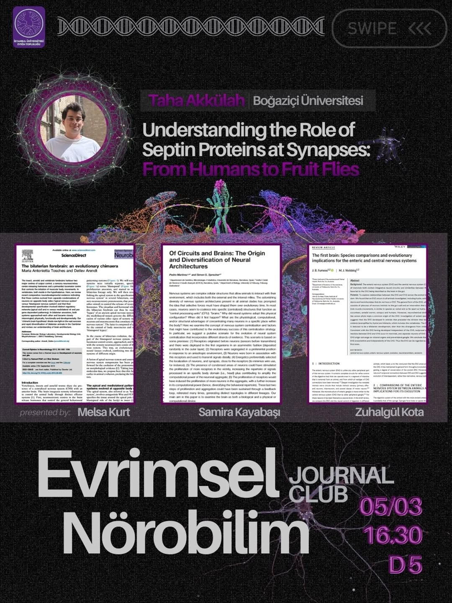
Evrimsel Nörobilim Journal Club — Oturum 5
Boğaziçi Üniversitesi'nden Taha Akkülah'ın konuk sunumu eşliğinde Tosches & Arendt (2013), Martinez & Sprecher (2020) ve Furness & Stebbing (2017) makaleleriyle sinir sisteminin merkezileşmesini tartışıyoruz.
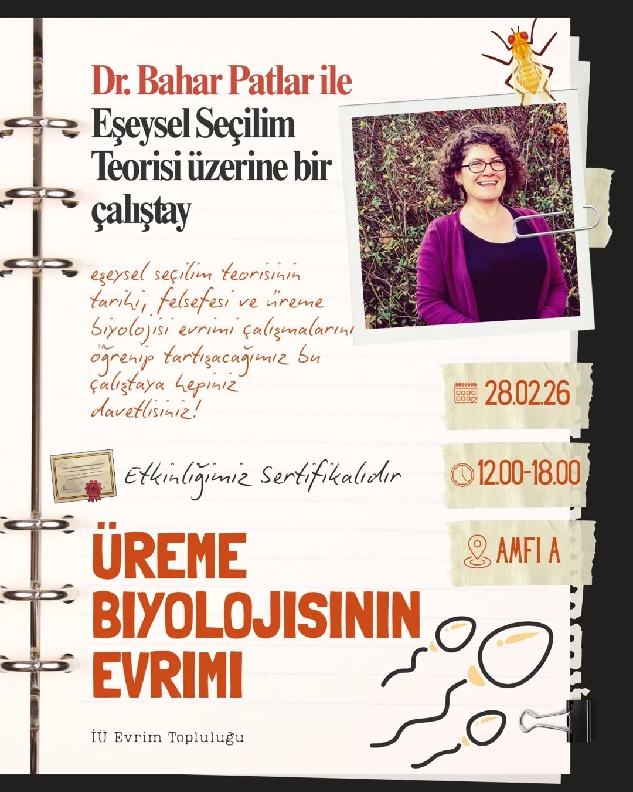
Dr. Bahar Patlar ile Eşeysel Seçilim Çalıştayı
Martin Luther Üniversitesi'nden Dr. Bahar Patlar ile eşeysel seçilim teorisini tarihsel, felsefi ve biyolojik bağlamda bütüncül bir bakış açısıyla tartışan sertifikalı, kapsamlı bir tam günlük çalıştay.
.jpg)
Cnidaria — Sinir Ağlarından Beyne
Cnidaria şubesi sinir sisteminin kökeni hakkında bize ne söylüyor? Kelava et al. (2015), Sprecher (2022) ve Arendt et al. (2016) makaleleriyle diffüz sinir ağlarından merkezi sinir sistemine geçişin evrimsel hikayesini inceledik.
.jpg)
Psikiyatrik Hastalıkların Evrimsel Kökeni
Psikiyatrist Dr. İlker Küçükparlak'ın anlatımıyla psikopatolojik bozuklukları evrimsel bir perspektiften ele aldık.
.jpg)
Denizlerdeki Küresel Değişikliklerin Biyolojik Etkileri ve Evrim
Prof. Dr. Murat Belivermiş ile iklim değişikliği, okyanus ekosistemlerindeki bozulmalar, deniz canlılarının adaptasyonları ve bu süreçlerin evrimsel etkilerini tartıştık.
.jpg)
Evrimsel Nörobilim Journal Club — Oturum 3
"Before the Brain" temasıyla sinaptik proteinlerin ve uyarılabilirliğin evrimsel kökenlerini Sachkova et al. (2025), Colgren & Burkhardt (2025) ve Wan & Jékely (2021) makaleleri üzerinden tartıştık.
.jpg)
Makale Grubu: Arş. Gör. Ahmet Arıhan Erözden Eşliğinde Tardigradlar
Arş. Gör. Ahmet Arıhan Erözden eşliğinde, Sevde Nur Aydın ve Esma Güler'in sunumlarıyla Tardigradların evrimine ilişkin iki makaleyi inceledik.
.jpg)
Evrimsel Nörobilim Journal Club — Oturum 2
Makale sunumlarına geçmeden önce evrim ve nörobilimin temel kavramlarını öğrenci sunumları eşliğinde tartıştık.
.jpg)
Evrimsel Nörobilim Journal Club — Oturum 1
Tanışma etkinliği ve "A History of Ideas in Evolutionary Neuroscience" ile evrimsel nörobilime dair geçmişten bugüne geliştirilmiş düşünce ve çalışmaları tarihsel bir düzlemde keşfettik.
.jpg)
Ahlakın Evrimsel Boyutu
Kadir Has Üniversitesi'nden Doç. Dr. Onurcan Yılmaz'ın anlatımıyla günümüz ahlaki yargılarının kökenlerini evrimsel ve psikolojik bir perspektiften tartıştık.
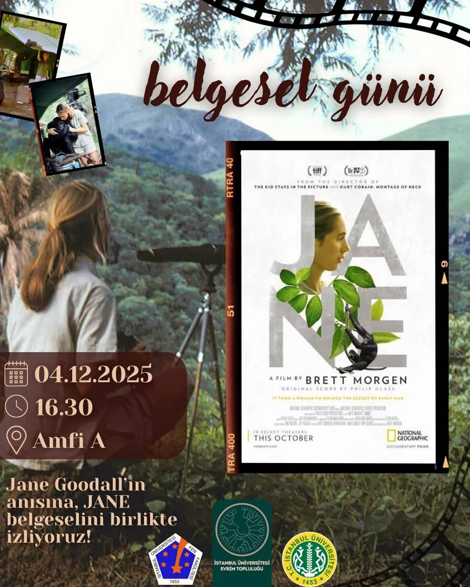
Belgesel Günü: JANE (2017)
Jane Goodall'ın anısına, onun şempanzelere adanmış ilham verici yolculuğunu anlatan Brett Morgen imzalı JANE (2017) belgeselini birlikte izledik.
.jpg)
Antik DNA Işığında İnsan Evrimi ve Kültürel Süreçler
Hacettepe Üniversitesi'nden Dr. Nefize Ezgi Altınışık ile Türkiye'deki Antik DNA çalışmalarını ve bu çalışmaların kültürel anlatıya ve toplumsal cinsiyet rollerine olan etkisini konuştuk.
.jpg)
Genomların İzinde: Evrimin Moleküler Yolculuğu
Sabancı Üniversitesi'nden Doç. Dr. Ogün Adebali ile evrimsel süreçte genomlarımızda biriken değişimlerin hastalıklardaki rolünü, DNA hasar birikimini ve filogenetik tabanlı yöntemleri konuştuk.
.jpg)
İstanbul Üniversitesi'nde Evrim
Üniversitemizde geçmişten bugüne evrim fikrinin nasıl ele alındığını ve İstanbul Üniversitesi çatısı altında yürütülen araştırmaların evrimle olan ilişkisini Prof. Dr. Cihan Demirci Tansel, Doç. Dr. Vahap Eldem ve Arş. Gör. Harun İnci'den dinledik.
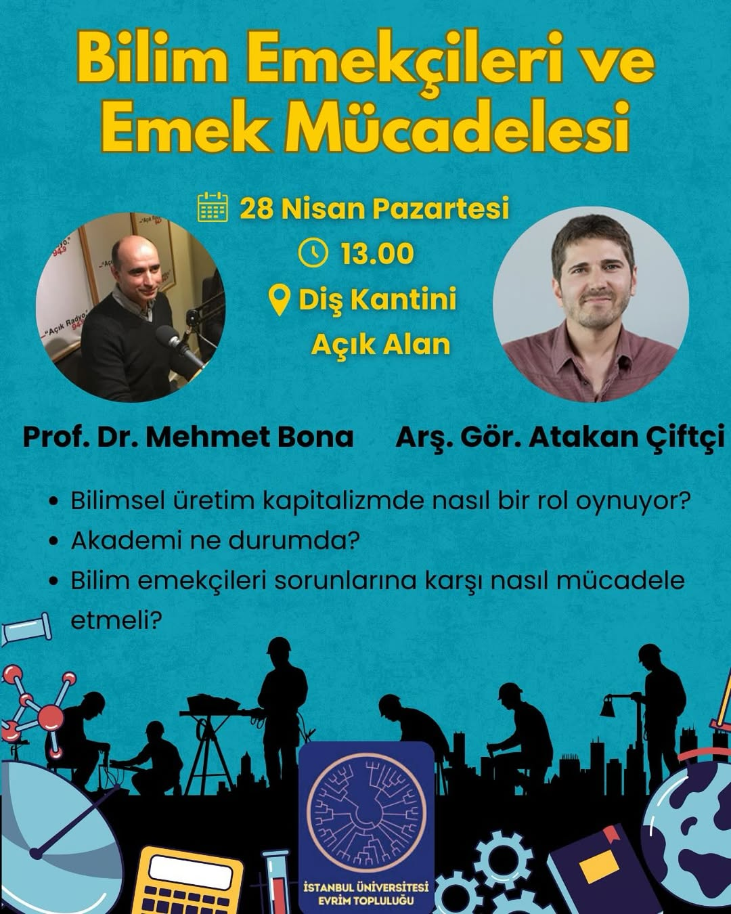
Bilim Emekçileri ve Emek Mücadelesi
1 Mayıs'a giderken, Prof. Dr. Mehmet Bona ve Arş. Gör. Atakan Çiftçi ile bilim emekçilerinin mücadelesini, akademinin durumunu ve çözüm yollarını tartıştık.
.jpg)
Evrimsel Nörobilim Çalışma Grubu — Oturum 3
Sinir Sisteminin Gelişimi ve Neural Crest konularını ele aldık; beyin bölgeleri quizi, nöral gelişim sunumu ve "Evolution of Vertebrates as Viewed from the Crest" makalesi tartışmasıyla devam ettik.
.jpg)
Evrimsel Nörobilim Çalışma Grubu — Oturum 2
Katılımcıların beyin bölgelerine dair kısa sunumlarıyla nöroanatomiye giriş yapıldı; ardından "The Evolutionary Origins of the Vertebrate Olfactory System" makalesi sunuldu ve tartışıldı.
.jpg)
Evrimde İz Bırakmış Kadınlar
8 Mart'a giderken; Sarah Blaffer Hrdy, Lynn Margulis ve Mary Leakey başta olmak üzere evrim teorisine katkı sunmuş kadın bilim insanlarının yaşam ve çalışmalarını konuştuk.
.jpg)
Evrimsel Nörobilim Çalışma Grubu — Oturum 1
Nöronların ortaya çıkışı, sinir sisteminin merkezileşmesi ve farklı hayvan gruplarındaki evrimini inceleyen çalışma grubumuzun ilk buluşması; temel nörobilim ve gönüllü makale sunumlarıyla başladı.
.jpg)
Makale Grubu: Doç. Dr. Yasemin Aydın ile Gelişim Biyolojisi ve Evrim
Doç. Dr. Yasemin Aydın tarafından belirlenen makalelerin öğrenci sunumları ve tartışmalarla işlendiği etkinlik, Fahir Yeniçay Dersliği'nde gerçekleşti.
.jpg)
Biyoloji Felsefesine Giriş: Temel Tartışmalar
Tarihinden ve felsefesinden bağımsız aktarılan anaakım bilim anlatısının ötesine geçerek biyoloji felsefesini keşfettiğimiz etkinlik; kitap ödüllü sorular da içerdi.
.jpg)
C.M. Kösemen ile Paleoart & Spekülatif Evrim
Fosilleri en doğru şekilde nasıl resmederiz? Canlılar farklı koşullarda evrimleşseydi nasıl görünürdü? Sanat ve bilimin kesişiminde C.M. Kösemen ile keşfettik.
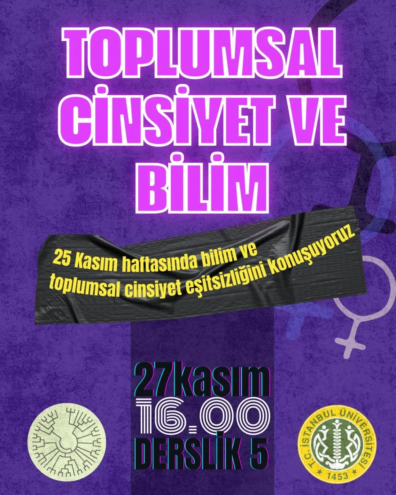
Toplumsal Cinsiyet ve Bilim
25 Kasım Kadına Yönelik Şiddete Karşı Mücadele Günü haftasında Evelyn Fox Keller'ın kitabından bir bölümü okuyup toplumsal cinsiyet ile bilim eşitsizliğini tartıştık.
.jpg)
Makale Grubu: Sinir Sisteminin Omurgasız Kökenleri
Sezonun ilk makale grubu etkinliğinde biri İngilizce biri Türkçe gerçekleştirilen iki sunum, Derslik 5'te öğrenciler arasında tartışıldı.
.jpg)
Çağatay Tarhan ile Evrim Dersleri
Evrim teorisi ve mekanizmalarının derinlemesine ele alındığı iki oturumlu ders serisi (14 ve 21 Ekim). Temellerden başlayarak giderek detaylandı; her seviyeden katılımcıya hitap etti.
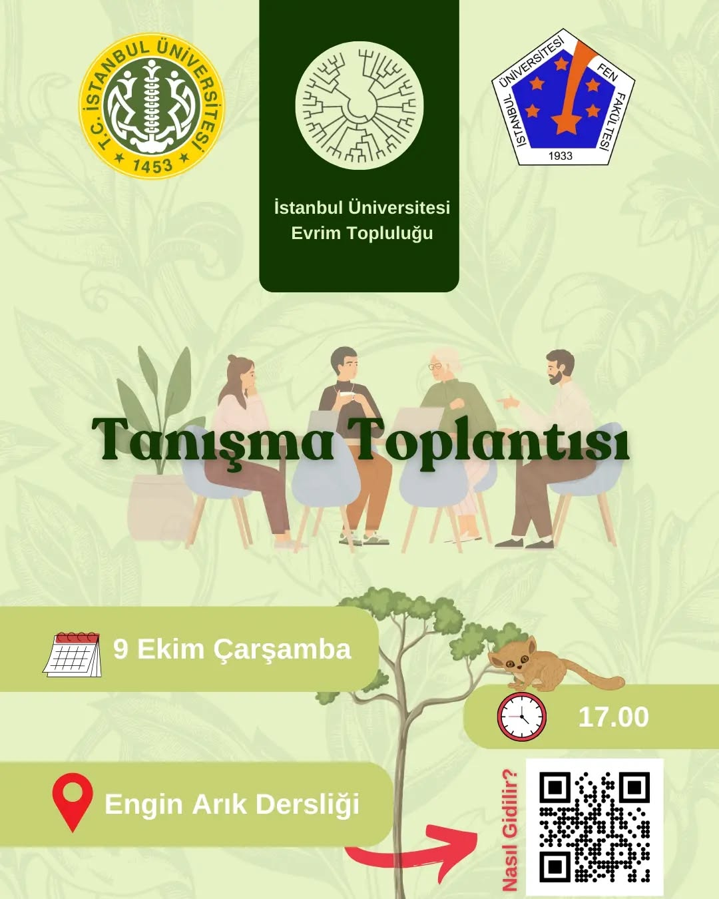
Evrim Topluluğu Tanışma Toplantısı
Evrim Topluluğu'nu tanımak, yapılan ve yapılacak etkinlikler hakkında bilgi almak ve toplulukta aktif rol almak isteyen herkese yönelik tanışma toplantısı.
.jpg)
Belgesel Günü: Secrets of Neanderthals
Evrim Topluluğu ve Sinema Topluluğu ortaklığıyla Şanidar Mağarası kazılarını ve en iyi korunmuş Neandertal iskeleti Shanidar Z'yi anlatan belgesel izlendi.
.jpg)
Prof. Dr. Murat Belivermiş Eşliğinde Makale Grubu
Beste Zorlu ve Alper Karagöl'ün sunumuyla "Evolutionary rescue via transgenerational plasticity" ve "Predicting evolutionary responses due to climate change in the sea" makaleleri tartışıldı.
.jpg)
İhsan Ketin Doğa Tarihi Müzesi Gezisi
Evrim Topluluğu ve Antropoloji Kulübü'nün ilk ortak etkinliği; İTÜ Maden Fakültesi bünyesindeki Prof. Dr. İhsan Ketin Doğa Tarihi Müzesi'ne gezi.
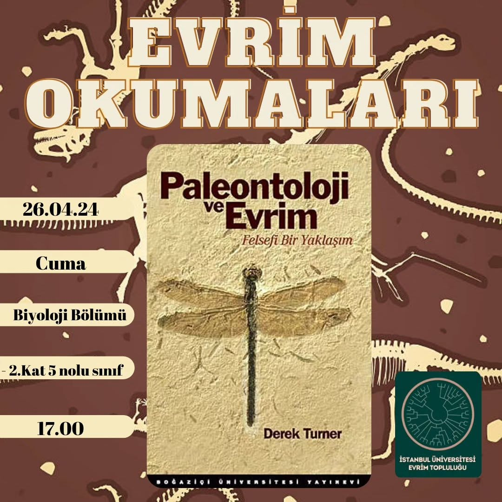
Evrim Okumaları 5: Paleontoloji ve Evrim
Derek Turner'ın "Paleontoloji ve Evrim: Felsefi Bir Yaklaşım" kitabının ilk üç bölümü üzerinden filetik kademelilik, kesintili denge ve tür kavramları tartışıldı.
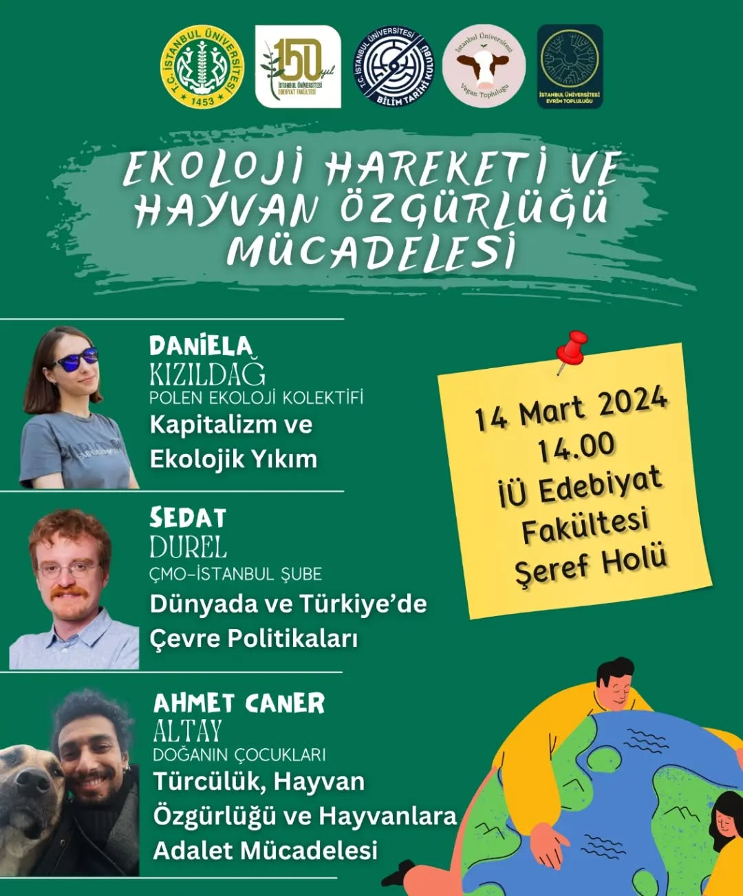
Ekoloji Hareketi ve Hayvan Özgürlüğü Mücadelesi
Vegan Topluluğu, Evrim Topluluğu ve Bilim Tarihi Kulübü'nün ortak etkinliği; ekoloji hareketi ve hayvan özgürlüğü mücadelesi tarihsel ve felsefi bir perspektiften ele alındı.
.jpg)
Sercan Acar ile Primatların Yaşam Öyküleri
Antropoloji bölümü akademisyeni Dr. Sercan Acar'ın sunumuyla primatların milyonlarca yıllık yaşam öyküleri ve evrimsel süreçleri incelendi.
.jpg)
Evrim Okumaları 4: İdeoloji Olarak Biyoloji
Richard Lewontin'in bilim ile ideoloji ilişkisini inceleyen "İdeoloji Olarak Biyoloji" kitabı tartışıldı; biyolojik indirgemecilik ve sınıfsal eşitsizliklerin perdelenmesi ele alındı.
.jpg)
Prof. Dr. Mehmet Bona ile Evrim Teorisine Kısa Bir Giriş: Mekanizmalar
Kulübün ilk resmi üniversite etkinliğinde Prof. Dr. Mehmet Bona ile evrimin işleyişini sağlayan mekanizmalar ele alındı.
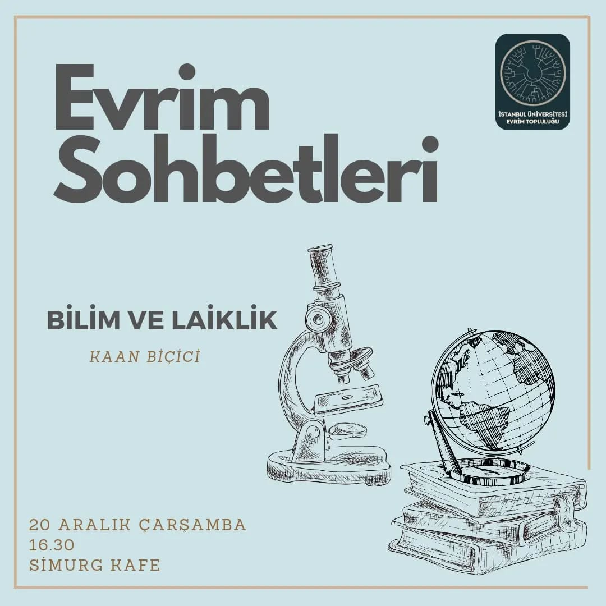
Kaan Biçici ile Bilim ve Laiklik
Kaan Biçici'nin anlatımıyla bilim ve laiklik arasındaki ilişki tarihsel ve felsefi bir perspektiften ele alındı.
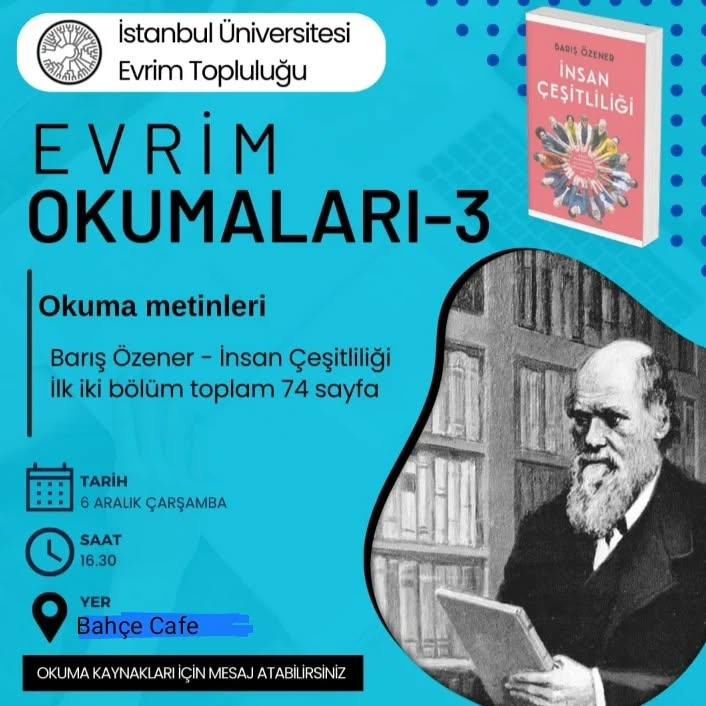
Evrim Okumaları 3: İnsan Çeşitliliği
Barış Özener'in "İnsan Çeşitliliği" kitabı tartışıldı; insan çeşitliliğinin biyolojik ve evrimsel temelleri değerlendirildi.
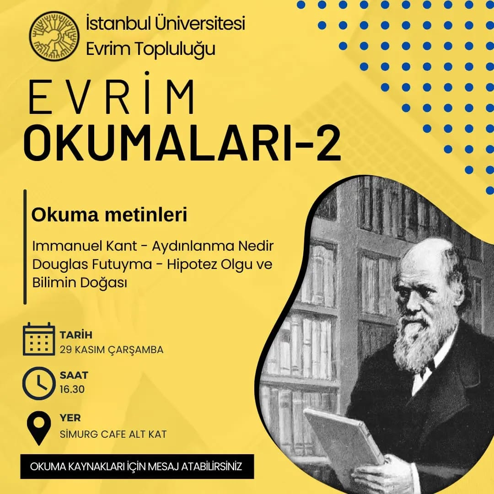
Evrim Okumaları 2: Aydınlanma, Hipotez, Olgu ve Bilimin Doğası
Immanuel Kant'ın "Aydınlanma Nedir" ve Douglas Futuyma'nın "Hipotez, Olgu ve Bilimin Doğası" metinleri okunup tartışıldı.
.jpg)
Dr. Çağatay Tarhan ile Evrim Teorisinin Tarihi
"Darwin Öncesi ve Sonrası Düşünceler" başlığıyla Dr. Çağatay Tarhan'ın anlatımıyla evrim teorisinin tarihsel gelişimi ele alındı.
.jpg)
Evrim Okumaları 1: Tamer Kaya — Evrim
Tamer Kaya'nın "Evrim" kitabının tartışıldığı ilk okuma grubu etkinliği; kalınan yerden devam edildi ve yeni dönemin ilk topluluğu buluşması gerçekleşti.
.jpg)
Tanışma Toplantısı
Dönem boyunca gerçekleştirilecek etkinlikleri konuşmak ve birbirini tanımak için düzenlenen ilk buluşma.
.jpg)
Dr. Çağatay Tarhan ile Evrim 101
Bilim Tarihi Kulübü ile ortak düzenlenen söyleşide Dr. Öğr. Üyesi Çağatay Tarhan "Evrim Ne Söyler? Neden Önemlidir?" sorusunu ele aldı.
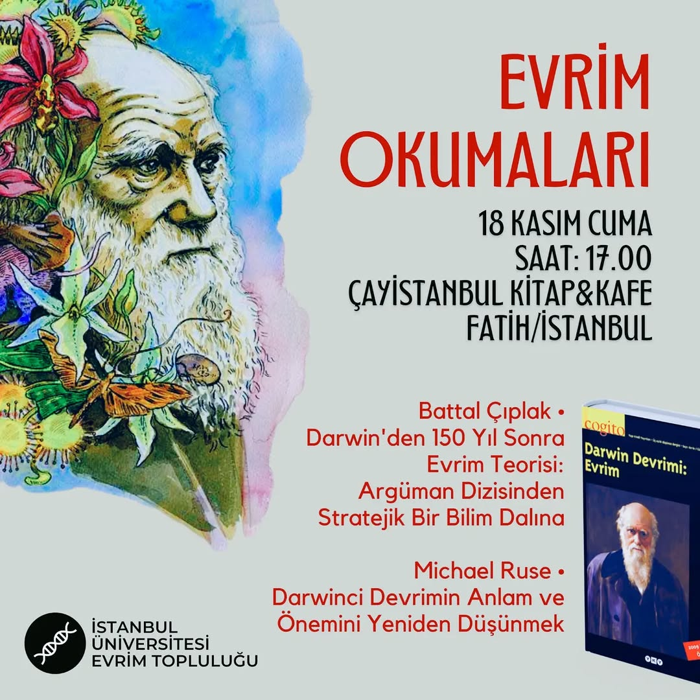
Evrim Okumaları: Darwin Devrimi
Sınavların ardından devam eden Evrim Okumalarında Darwin Devrimi üzerine metinler tartışıldı. PDF materyaller WhatsApp grubu üzerinden paylaşıldı.
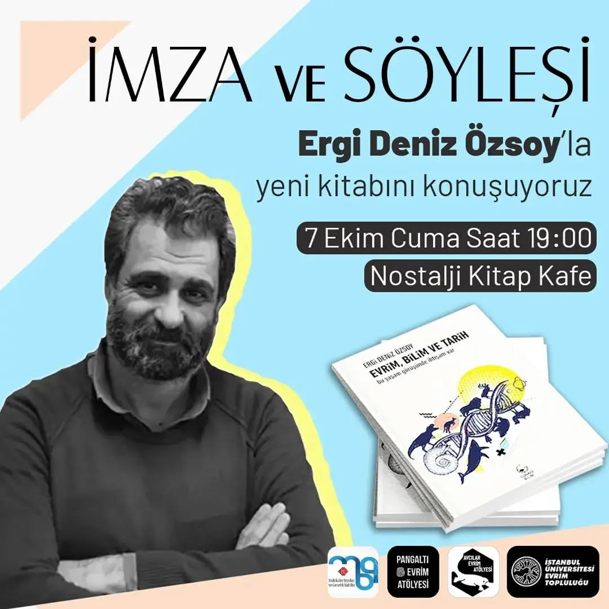
Prof. Dr. Ergi Deniz Özsoy: İmza ve Söyleşi
Pangaltı Evrim Atölyesi ve İKÜ MBG kulübüyle ortak düzenlenen etkinlikte Prof. Dr. Ergi Deniz Özsoy, Ginko Bilim'den çıkan "Evrim, Bilim ve Tarih" kitabı üzerine konuştu ve kitaplarını imzaladı.
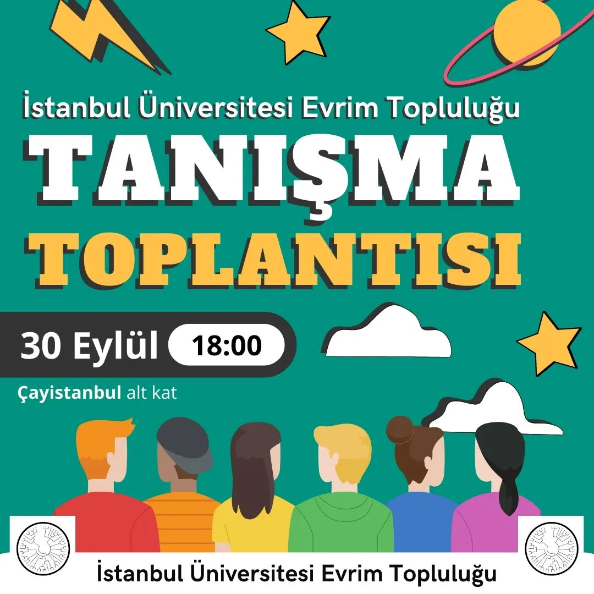
Tanışma Toplantısı
Dönem boyunca gerçekleştirilecek etkinliklerin konuşulduğu ve topluluğun birbirini tanıdığı ilk buluşma.
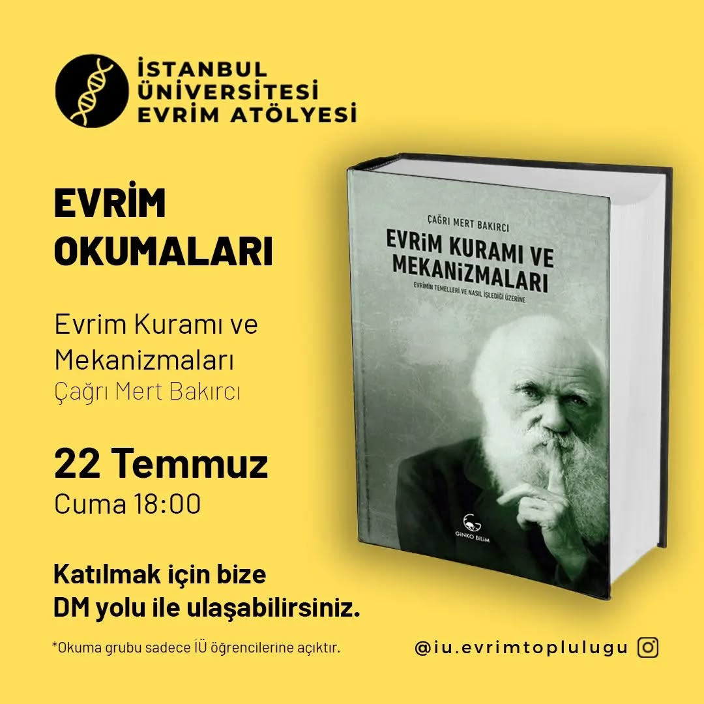
Evrim Okumaları: Çağrı Mert Bakırcı'nın "Evrim Kuramı ve Mekanizmalar" Kitabı
Çağrı Mert Bakırcı'nın "Evrim Kuramı ve Mekanizmaları" kitabıyla devam eden evrim okumalarına katılım için detaylar DM üzerinden paylaşıldı.
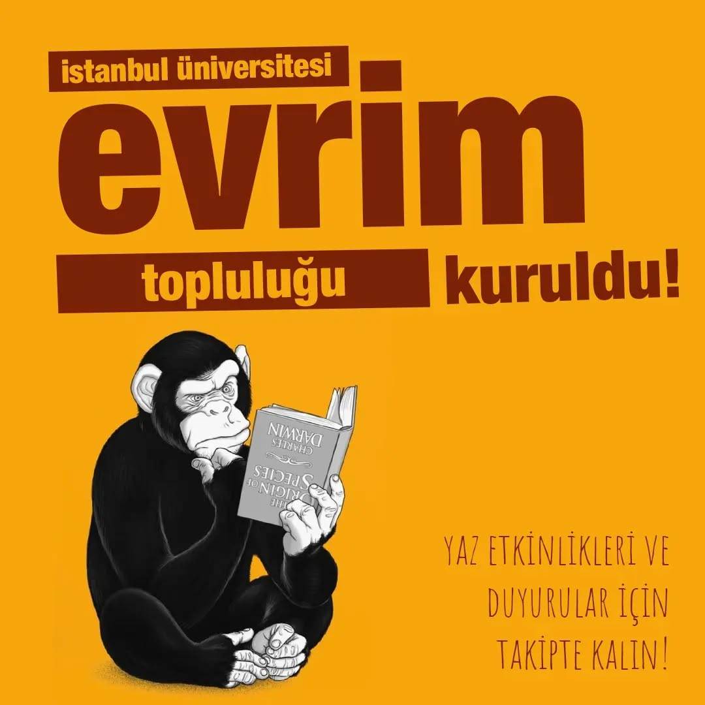
İstanbul Üniversitesi Evrim Topluluğu Kuruluşu
Yaklaşık bir dönemdir süren evrim okumalarının ardından İstanbul Üniversitesi Evrim Topluluğu olarak yola devam etme kararı alındı. Amacımız evrim teorisini disiplinlerarası bir perspektifle ele almak ve üniversitemizde tartışma ortamı yaratmak.